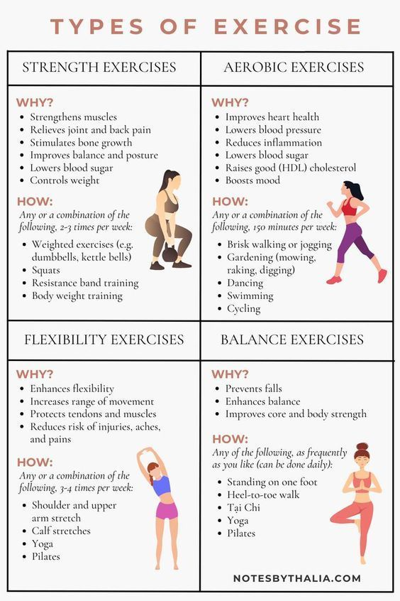
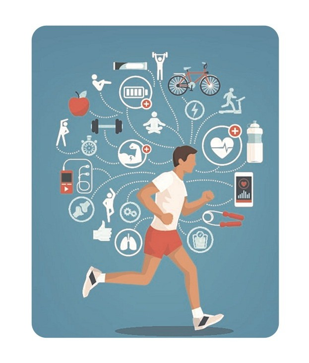
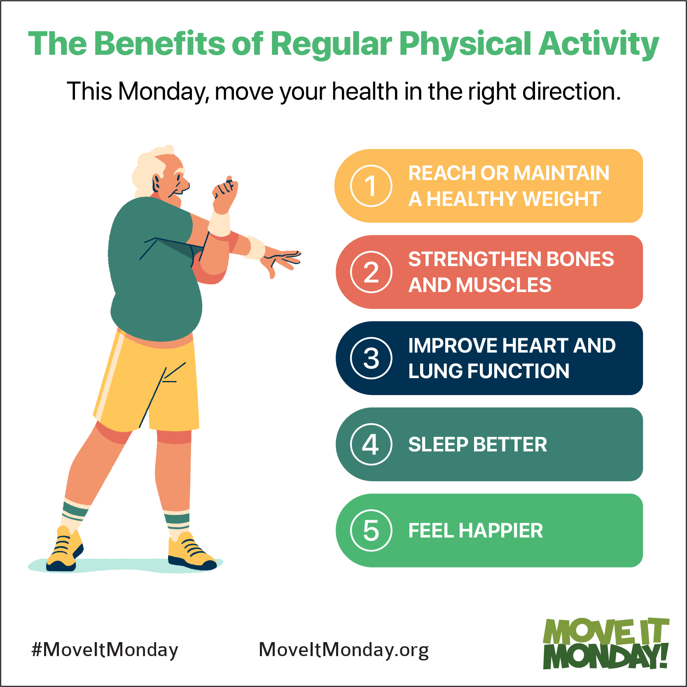
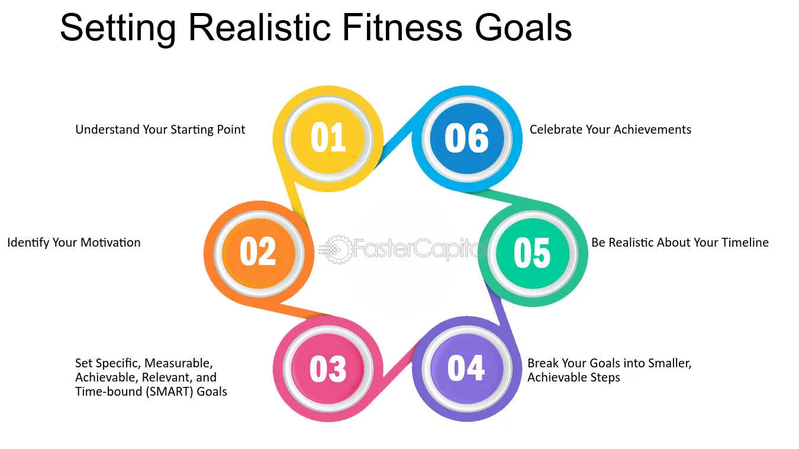

Types of Exercises & Their Benefits

- Strength Training: Builds muscle, increases metabolism, and improves bone density.
- Cardio: Improves heart health, burns calories, and boosts endurance.
- Flexibility: Enhances range of motion, reduces injury risk, and improves posture.
- Balance: Prevents falls, improves coordination, and supports overall stability.
Beginner-Friendly Workouts & Routines

Starting a fitness journey can be daunting, but here are some beginner-friendly workouts:
- Bodyweight Exercises: Push-ups, squats, and lunges.
- Walking: A simple yet effective cardio workout.
- Yoga: Improves flexibility and reduces stress.
- Stretching Routines: Helps with flexibility and recovery.
The Role of Exercise in Preventing Chronic Diseases

Regular physical activity can help prevent and manage chronic diseases such as:
- Heart Disease: Exercise strengthens the heart and improves circulation.
- Diabetes: Helps regulate blood sugar levels.
- Obesity: Burns calories and helps maintain a healthy weight.
- Mental Health: Reduces symptoms of depression and anxiety.
The Importance of Regular Movement

Sedentary lifestyles can have negative impacts on health. Here's why regular movement is crucial:
- Reduces Risk of Chronic Diseases: Even light activity can lower the risk of heart disease and diabetes.
- Improves Posture: Regular movement helps prevent back pain and improves posture.
- Boosts Energy Levels: Physical activity increases energy and reduces fatigue.
- Enhances Mental Clarity: Movement can improve focus and cognitive function.
Tips for Staying Motivated & Setting Realistic Fitness Goals

Staying motivated can be challenging, but these tips can help:
- Set SMART Goals: Specific, Measurable, Achievable, Relevant, and Time-bound.
- Track Progress: Keep a journal or use an app to monitor your progress.
- Find a Workout Buddy: Exercising with a friend can keep you accountable.
- Mix It Up: Try different types of exercises to keep things interesting.
- Reward Yourself: Celebrate milestones with non-food rewards.